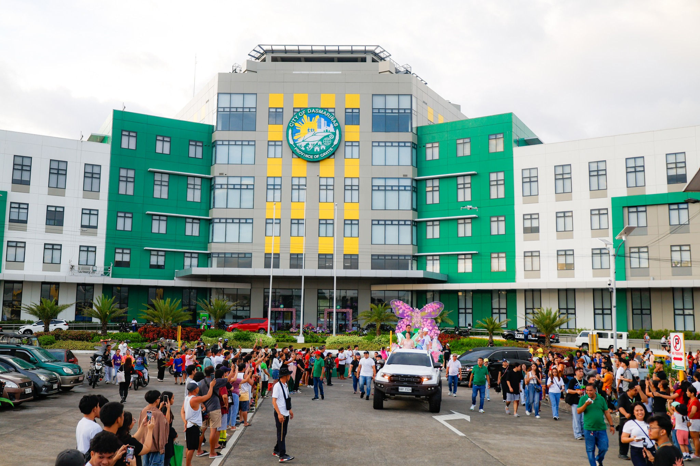
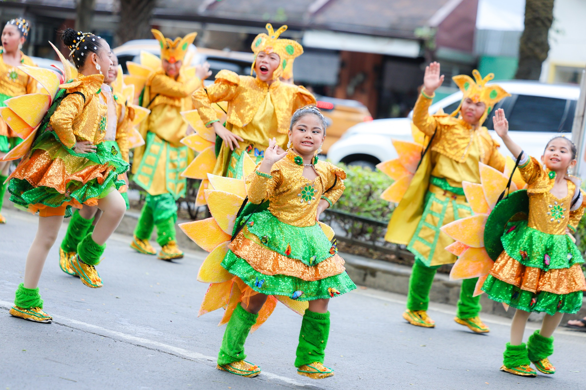

Dasmariñas City, located in the province of Cavite, has a rich and vibrant history that traces back to the Spanish colonial period in the Philippines. Originally, it was a small farming community where the local people depended on agriculture and simple trade for their livelihood. On May 12, 1867, it became an official town, named after Governor-General José de la Cruz Dasmariñas, a key figure in Philippine colonial administration. Over time, Dasmariñas grew steadily as more settlers arrived, drawn by fertile land and opportunities for a better life.
The people of Dasmariñas are known for their hardworking and resilient nature. Their community played a significant role during the Philippine Revolution against Spanish rule, with several key events taking place in and around the area. This strong historical foundation contributed to the town’s reputation as a place of dedication, courage, and civic pride.
In modern times, Dasmariñas gained nationwide recognition as the home of the Paru-Paro Festival, a vibrant and colorful celebration held every year. The festival, whose name means “butterfly” in Filipino, symbolizes transformation, progress, and the unity of the community. During the festival, residents and visitors witness spectacular street dances, dazzling costumes, and creative performances that highlight the city’s culture, artistry, and joyful spirit. The Paru-Paro Festival not only honors the past but also inspires hope for the future.
By the late 1900s and early 2000s, Dasmariñas experienced rapid growth. The city expanded with the establishment of schools, commercial businesses, residential subdivisions, and public infrastructure, reflecting the increasing needs of its growing population. The city’s continuous development led to its official recognition as a city in 2009, further boosting its economic and cultural significance within Cavite and the surrounding regions.
Today, Dasmariñas stands as one of the most progressive and dynamic cities in Cavite. It successfully blends its rich historical heritage with modern development, offering residents and visitors a unique combination of cultural pride, educational opportunities, business ventures, and recreational spaces. From its humble beginnings as a farming town to its current status as a bustling urban center, Dasmariñas continues to thrive as a community that celebrates its past while embracing the possibilities of the future.